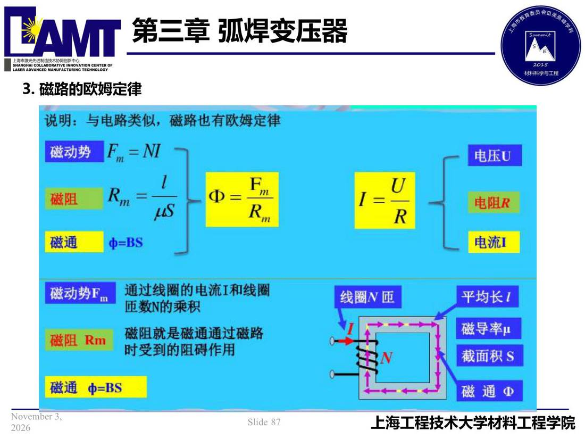

03 第3章 弧焊变压器/p087 3. 磁路的欧姆定律
p087 3. 磁路的欧姆定律
📄 原文：📄 弧焊电源 课件（PDF 第 87 页）（幻灯片 87/273；PDF 第 87 页）
3. 磁路的欧姆定律

讲义原文
本页在课件中是纯图文版式（无文字层），内容以页图与下面的 OCR 文本为准。
页面文字（OCR 机读，可能有错字，以页图为准）
3.磁路的欧姆定律 说明：与电路类似，磁路也有欧姆定律 磁动势 =M 磁阻 中=- 磁通 中=BS 电压U 1=- 电阻R 电流I 磁动势Fm 磁阻Rm